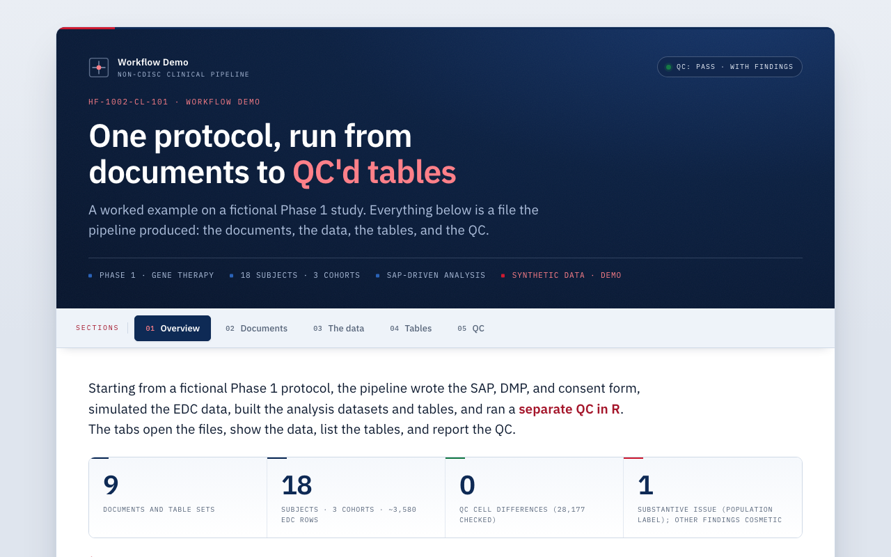

Non-CDISC Analysis Pipeline
Analysis datasets and a full TFL package built directly from raw EDC, with an end-to-end QC closure trail.
Launch live demo
Runs in your browser
What it does
Derives analysis-ready datasets and the final tables/figures/listings package from raw EDC without the CDISC intermediate layers.
How it works
- Builds analysis datasets, then generates populated tables.
- Codes adverse events to MedDRA SOC/PT.
- Ships a QC closure memo documenting the review trail.
PythonTFL
MedDRAQC closure

Static preview - click to open the live, interactive demo